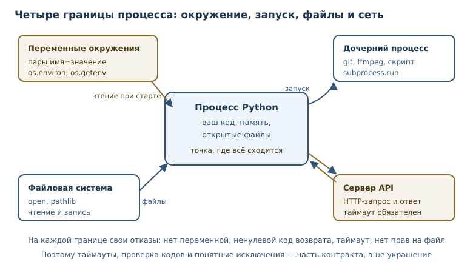
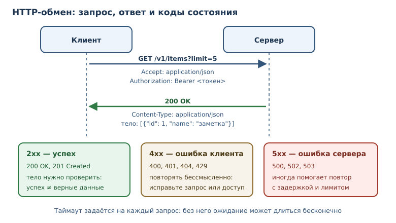

ОС, процессы, сеть и API
Как программа взаимодействует с системой: переменные окружения, внешние процессы, HTTP-запросы и клиенты API.
В этой главе
До сих пор программы работали с данными, которые создавали сами. Настоящее приложение взаимодействует с миром: читает настройки из окружения, запускает внешние команды, обращается к серверам по HTTP и разбирает ответы. Каждое такое взаимодействие пересекает границу процесса, а значит, требует аккуратной обработки ошибок и внимания к безопасности.
В этой главе — четыре границы. Модуль os даёт доступ к системе и
переменным окружения. Модуль subprocess запускает внешние процессы.
HTTP-клиент отправляет запросы по URL и получает ответы с кодом
состояния HTTP. Вместе они позволяют построить клиент API — код,
который инкапсулирует работу с внешним сервисом.
35.1 Что вы сможете после этой главы
К концу главы программа научится безопасно выходить во внешний мир и возвращаться с данными. Вы сможете:
- читать настройки из переменных окружения и не хранить секреты в коде;
- безопасно запускать внешние процессы и проверять код возврата;
- разбирать и собирать URL, понимать структуру HTTP-запроса;
- обрабатывать коды состояния и ошибки сети;
- проектировать клиент API с таймаутами и явными ошибками.
35.2 Модуль os: система и пути
Модуль os — модуль взаимодействия с операционной системой: каталоги,
переменные окружения, процессы. В современном Python часть его задач
перекрывается pathlib, но os.path и переменные окружения по-прежнему
нужны.
import os
path = os.path.join("data", "reports", "2026-11-01.csv")
print(path)
print(os.path.basename(path))
print(os.path.splitext(path))
print(os.path.normpath("data/./reports/../reports/file.csv"))
data/reports/2026-11-01.csv
2026-11-01.csv
('data/reports/2026-11-01', '.csv')
data/reports/file.csv
os.path.join собирает путь, подставляя разделитель, принятый в системе.
os.path.normpath убирает . и разрешает .. без обращения к диску. Эти
функции работают со строками, а не с объектами Path; в новом коде чаще
используют pathlib, но при работе с чужими библиотеками оба стиля
встречаются.
Важно различать «путь как строка» и «путь как файл». Функции os.path ничего
не читают с диска и не проверяют существование. Если файла нет, вы узнаете об
этом только при попытке открыть его — и это нормально: проверка существования
затем открытие создаёт состояние гонки, когда файл удаляют между двумя
действиями. Правильный подход — открывать и обрабатывать FileNotFoundError.
Платформенные различия
Модуль os скрывает часть различий между системами, но не все. Разделитель
пути, регистр букв в именах файлов, права доступа и переменные окружения
устроены по-разному. Поэтому код, который работает с путями, должен
использовать os.path или pathlib, а не жёстко вписанные / и \. Если
программа зависит от платформы, это стоит проверить в непрерывной интеграции
на целевой системе, а не обнаружить в production.
Ещё одно различие — кодировка имён файлов и текста. pathlib и open
принимают encoding явно; полагаться на локаль по умолчанию опасно, потому
что на разных машинах она разная.

35.3 Переменные окружения
Переменная окружения — пара «имя — значение», передаваемая процессу извне; стандартный способ конфигурации без секретов в коде. Один и тот же код в разработке и в production отличается именно окружением: адресом базы, уровнем журналирования, ключами доступа.
import os
database_url = os.environ.get("DATABASE_URL", "sqlite:///local.db")
debug = os.environ.get("DEBUG", "0") == "1"
os.environ ведёт себя как словарь, но изменения в нём влияют на дочерние
процессы. Чтение через os.environ["NAME"] поднимает KeyError, если
переменной нет; os.getenv("NAME", default) возвращает значение по умолчанию.
Для необязательных настроек предпочтителен второй вариант: программа должна
запускаться с разумными значениями по умолчанию.
Настройки и среды
Один и тот же код обычно запускается в нескольких средах: локально, на тестовом стенде и в production. Отличаются адреса сервисов, уровни журналирования и ключи. Хранить все варианты в коде плохо: секреты попадут в репозиторий, а ветвления по имени среды расползутся по программе. Переменные окружения разделяют код и конфигурацию: артефакт собирается один раз, а поведение задаётся при запуске.
Для проверки удобно передавать окружение в функцию словарём, как обычные сведения. Тогда тест не зависит от машины, а настройки читаются в одном месте.
Секреты — отдельная и самая важная тема. Токен, пароль или ключ доступа не должны попадать в код, git и логи. Их передают через переменную окружения или менеджер секретов, а в коде читают один раз при старте и проверяют, что значение задано. Сообщение об ошибке должно говорить «переменная не задана», а не печатать её значение.
35.4 Процессы и subprocess
Модуль subprocess — модуль запуска внешних процессов с контролем
аргументов, потоков ввода-вывода и кода возврата. Программа на Python может
вызвать git, ffmpeg или собственный скрипт и получить результат.
import subprocess
result = subprocess.run(
["python", "-V"],
capture_output=True,
text=True,
timeout=5,
)
print(result.returncode)
print(result.stdout.strip())
Параметры важны. capture_output=True перехватывает потоки, text=True
декодирует байты в строку, timeout=5 не даёт процессу зависнуть навсегда.
Аргументы передаются списком: первый элемент — программа, остальные —
аргументы. Такой вызов не проходит через оболочку, поэтому пробелы и кавычки в
данных не превращаются в команды.
$ python -c "print('привет')"
привет
Опасный вариант — shell=True со склейкой строки из пользовательских данных.
Если пользователь введёт ; rm -rf ~, оболочка выполнит и вторую команду.
Запускайте процессы без оболочки и передавайте аргументы списком; если
оболочка действительно нужна, экранируйте значения или не используйте их вовсе.
35.5 URL и HTTP-запрос
URL — адрес ресурса в сети: схема, хост, путь, параметры запроса. Разбор URL — обычная работа со строками, и стандартная библиотека умеет её делать без сети.
from urllib.parse import parse_qs, urlencode, urljoin, urlparse
url = "https://api.example.com/v1/items?limit=5&page=2"
parsed = urlparse(url)
print(parsed.scheme, parsed.netloc, parsed.path)
print(parse_qs(parsed.query))
print(urlencode({"q": "python 3.14", "page": 2}))
print(urljoin("https://api.example.com/v1/", "items/42"))
https api.example.com /v1/items
{'limit': ['5'], 'page': ['2']}
q=python+3.14&page=2
https://api.example.com/v1/items/42
urlparse разделяет адрес на части, parse_qs разбирает параметры, а
urlencode собирает их обратно, корректно экранируя пробелы и специальные
символы. urljoin соединяет базовый адрес с относительным — незаменим при
построении ссылок на ресурсы API.
HTTP-клиент — клиент, отправляющий HTTP-запросы и получающий ответы от
сервера. Запрос состоит из метода (GET, POST, …), пути, заголовков и
необязательного тела. Ответ содержит код состояния, заголовки и тело.
from urllib.request import urlopen
with urlopen("https://api.example.com/v1/items", timeout=10) as response:
body = response.read().decode("utf-8")
print(response.status)
Сетевой вызов в книге не исполняется: пример зависит от внешнего сервера.
Важно другое — таймаут указывается всегда. Без него программа может ждать
ответа бесконечно, и никакой try не поможет. На 4xx и 5xx urlopen
поднимает HTTPError, а не возвращает ответ молча: тело ошибки доступно
через объект исключения, поэтому статус проверяют в except.
Код состояния HTTP — трёхзначный код ответа сервера: 2xx успех, 4xx ошибка клиента, 5xx ошибка сервера.
| Диапазон | Значение | Примеры |
|---|---|---|
| 2xx | успех | 200 OK, 201 Created, 204 No Content |
| 3xx | перенаправление | 301 Moved Permanently, 304 Not Modified |
| 4xx | ошибка клиента | 400 Bad Request, 401 Unauthorized, 404 Not Found, 408 Request Timeout, 429 Too Many Requests |
| 5xx | ошибка сервера | 500 Internal Server Error, 503 Service Unavailable |

Методы и повторные запросы
HTTP-метод сообщает намерение. GET читает записи и не меняет состояние
сервера; POST создаёт ресурс; PUT и PATCH обновляют; DELETE удаляет.
Повторная отправка GET безопасна: если ответ потерялся, запрос можно
повторить. Повтор POST без защиты может создать дубликат заказа, поэтому
операции создания либо не повторяют автоматически, либо снабжают ключом
уникальности. Это различие важно для клиента API: политика повторов зависит
от метода, а не только от кода ошибки.
Код — часть контракта. Успешный статус не означает «значения верные»: тело
ответа всё равно нужно проверить. Ошибка клиента означает, что запрос
некорректен или не авторизован; ошибка сервера — что проблема на стороне
сервиса и запрос можно повторить позже. Повторять 4xx обычно бессмысленно:
без изменений запрос получит тот же ответ. Исключения — 408 Request Timeout
и 429 Too Many Requests: протокол прямо предусматривает здесь повтор с
задержкой, а заголовок Retry-After подсказывает, сколько ждать. 5xx и
сетевые таймауты тоже имеет смысл повторить с задержкой.
35.6 Клиент API
Клиент API — код, инкапсулирующий обращение к внешнему API: формирование запросов, разбор ответов, обработка ошибок. Разбрасывать вызовы HTTP по всему проекту плохо: адреса, заголовки и обработка ошибок дублируются, а изменить поведение потом трудно. Клиент собирает это в одном месте.
requests / httpx — сторонние HTTP-клиенты с удобным API; выбираются по
требованиям проекта и фиксируются как зависимость. Оба умеют таймауты,
сессии и разбор JSON; повторные попытки настраивают отдельно или пишут
вручную — как в примере ниже. Выбор между ними — вопрос требований: httpx
поддерживает и синхронный, и асинхронный стиль, requests проще и шире
распространён.
Ответ API обычно приходит в JSON, а разбор — это уже знакомая работа со словарями и списками. Покажем разбор на заранее подготовленном теле, без сети:
import json
from urllib.parse import urljoin
BASE_URL = "https://api.example.com/v1/"
raw = '{"id": 42, "name": "Аня", "tags": ["admin", "dev"]}'
def parse_user(payload: str) -> dict[str, object]:
data = json.loads(payload)
return {"id": data["id"], "name": data["name"], "tags": data["tags"]}
user = parse_user(raw)
print(user)
print(urljoin(BASE_URL, f"users/{user['id']}"))
{'id': 42, 'name': 'Аня', 'tags': ['admin', 'dev']}
https://api.example.com/v1/users/42
Ошибки как часть интерфейса
Клиент API должен различать ситуации, а не сообщать «что-то пошло не так».
Отсутствие ресурса (404) — нормальный сценарий для get_note: вызывающий
код решает, показать пустую страницу или создать заметку. Отказ в доступе
(401) требует обновить токен или сообщить пользователю. Ошибка сервера
(5xx) означает, что проблема временная и запрос можно повторить позже.
Разные исключения позволяют обработать каждый случай отдельно и не
превращать всю программу в один except Exception.
Хороший клиент API:
- задаёт базовый адрес и версию API в одном месте;
- указывает таймаут на каждый запрос;
- проверяет код состояния и поднимает понятное исключение;
- разбирает JSON и проверяет обязательные поля;
- не логирует токены и тела с персональными данными;
- имеет отдельные исключения для «не найдено», «нет доступа» и «сбой сервера».
Пример клиента на httpx
Соберём эти правила в код. Соединение создаётся один раз: httpx.Client
держит пул соединений и общие заголовки, поэтому токен и базовый адрес не
повторяются в каждом вызове.
import os
import httpx
token = os.environ["API_TOKEN"]
client = httpx.Client(
base_url="https://api.example.com/v1/",
timeout=httpx.Timeout(5.0),
headers={"Authorization": f"Bearer {token}"},
)
Клиент закрывают через client.close() или создают в блоке
with httpx.Client(...) as client: — тогда соединения освобождаются
автоматически. raise_for_status() превращает ответ 4xx/5xx в
httpx.HTTPStatusError; без него тело ошибки легко принять за данные.
Повторяем только случаи, где он предусмотрен: 429 и 5xx, удваивая
задержку, чтобы не добить перегруженный сервер.
import time
import httpx
def fetch_with_retry(
client: httpx.Client, path: str, attempts: int = 3
) -> httpx.Response:
delay = 0.5
for attempt in range(1, attempts + 1):
try:
response = client.get(path)
response.raise_for_status()
return response
except httpx.HTTPStatusError as exc:
status = exc.response.status_code
retryable = status == 429 or status >= 500
if not retryable or attempt == attempts:
raise
except httpx.TransportError:
if attempt == attempts:
raise
time.sleep(delay)
delay *= 2
raise AssertionError("цикл всегда возвращает или поднимает исключение")
user = fetch_with_retry(client, "users/42").json()
print(user["name"])
Если сервер вернул 404, исключение уходит вызывающему коду сразу: это не
временная ошибка, и повтор её не исправит. Сетевые сбои httpx сообщает
исключениями семейства TransportError — их и перехватывает вторая ветка.
35.7 Типичные ошибки
- Нет таймаута. Запрос без таймаута может висеть бесконечно. Таймаут — обязательный параметр любого сетевого вызова.
- Игнорировать код состояния.
urlopenподнимаетHTTPErrorна 4xx/5xx, а клиенты вродеrequestsпо умолчанию возвращают ответ: безraise_for_status()тело ошибки легко принять за данные. - Складывать URL строками. Ручная конкатенация теряет экранирование и
ломается на параметрах с пробелами; используйте
urlencodeиurljoin. - Запускать процесс с
shell=True. Пользовательский ввод попадает в оболочку и могут выполнить произвольную команду. - Хранить секреты в коде. Токен в репозитории — утечка; используйте переменные окружения или менеджер секретов.
- Смешивать транспорт и логику. Функция, которая одновременно строит запрос, ходит в сеть и печатает отчёт, непроверяема. Разделяйте слои.
- Печатать секреты в логах. Даже отладочный вывод заголовков может
содержать
Authorization. - Считать, что сеть всегда доступна. Мобильный интернет пропадает, сервер перезагружается, прокси отвечает ошибкой. Клиент должен уметь завершаться с понятной ошибкой, а не зависать.
- Доверять
Content-Typeбез проверки. Сервер может объявитьapplication/json, а вернуть HTML страницы ошибки; проверяйте заголовок и статус доjson.loads, иначе разбор упадёт с невнятной ошибкой.
35.8 Упражнения
1. Разбор URL
Разберите адрес https://shop.example.com/catalog/items?category=books&page=3
на схему, хост, путь и параметры. Выведите параметры как словарь.
2. Сборка параметров
Соберите строку запроса для параметров {"q": "язык python", "limit": 10}.
Убедитесь, что пробел закодирован, а не потерян.
3. Пути через os.path
Из пути "backups/2026/october.tar.gz" получите каталог, имя файла и
расширение. Соберите обратно полный путь и сравните с исходным.
4. Настройки из окружения
Напишите функцию load_settings(env: dict[str, str]) -> dict[str, object],
которая читает DEBUG, PORT и DATABASE_URL со значениями по умолчанию
0, 8000 и sqlite:///local.db. Проверьте пустое окружение и заполненное.
5. Команда процесса
Напишите функцию, которая запускает git status --short в текущем каталоге и
возвращает код возврата и вывод. Объясните, почему аргументы передаются
списком и зачем нужен таймаут. Запускать в песочнице не нужно.
6. Коды состояния
Реализуйте classify(status: int) -> str, которая возвращает "успех",
"перенаправление", "ошибка клиента" или "ошибка сервера". Проверьте на
кодах 200, 301, 404, 503.
7. Клиент API
Напишите parse_items(payload: str) -> list[dict[str, object]], которая
разбирает JSON-массив товаров и возвращает список словарей с полями id,
name, price. Для отсутствующего поля поднимайте ValueError.
8. Безопасность команды
Объясните, почему опасно выполнять
subprocess.run(f"ls {user_input}", shell=True). Приведите пример
пользовательского ввода, который выполнит лишнюю команду, и покажите
безопасный вариант.
9. Ошибка сети
Напишите функцию safe_get(url: str, opener) -> str, которая возвращает тело
ответа или строку "недоступно" при сетевой ошибке; opener — функция вроде
urlopen, параметр позволяет подменить транспорт в тесте. Опишите, какие
исключения перехватывать и почему нельзя глушить все ошибки подряд.
10. Мини-проект: описание клиента
Спроектируйте клиент API для сервиса заметок: базовый адрес, методы
list_notes, get_note, create_note. Опишите структуру класса, обработку
кодов 404 и 401, таймауты и формат возвращаемых данных. Реализуйте разбор
ответа на подготовленном JSON без сетевых вызовов.
35.9 Проверка понимания
- Чем
os.pathотличается отpathlibи когда нужен каждый? - Почему настройки лучше хранить в переменных окружения, а не в коде?
- Зачем нужен
timeoutпри запуске процесса и сетевого запроса? - Чем опасен
shell=Trueи как его избежать? - Что означают группы кодов 2xx, 4xx и 5xx для клиента?
- Зачем выделять клиент API в отдельный слой?
- Почему проверка «файл существует, затем открыть» считается ошибкой?
35.10 Что дальше
Внешний мир отвечает сведениями, и эти сведения нужно где-то хранить. Следующая глава — о SQLite, SQL и сериализации: как сохранять структурированные записи, делать запросы и не терять целостность. О путях и файлах говорилось в главе 19, о JSON — там же; о зависимостях и их фиксации — в главе 33.